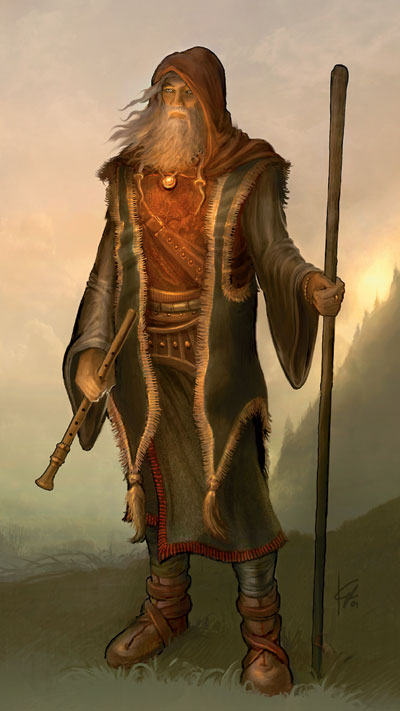
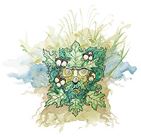

欧拜·亥（Obad-Hai）

萧姆
中等神力
圣徽：橡树叶实之假面

居住位面：Outlands
阵营：绝对中立
神职：自然，林地，自由，狩猎，野兽
信徒：野蛮人，巡林客，德鲁伊，猎人
领域：风，动物，土，火，植物，水
偏好武器：木杖
自然之神欧拜·亥的形如一位清瘦，面带风霜之色，而无法确定年龄的老者。他经常身着棕色或黄褐色长袍，看上去像是一位人类隐士，尽管其他种族的传说都把他描述成自己种族的样子。因为欧拜·亥严守中立，因此他和艾罗娜可以说并不是站在同一个立场上的。欧拜·亥擅长演奏一种名为萧姆管（一种双簧木管乐器）的乐器，并以之为自己的头衔。他也经常带着一根木杖在身边。
教义
欧拜·亥统治着自然与荒野，而且，他是所有有意与自然和谐共处的人的朋友。他期望他的追随者们能够这样，与自然中所有的东西和谐共处，各取所需。欧拜·亥说，那些破坏自然或做了其他伤害了自然的事的人，定当立刻受到适度的报复。对那些独自在旷野中生活的人来说，自然其实没什么可怕的，虽然确实有些笨蛋有些时候在旷野中遇到了些危险。在那些新移民眼中的，欧拜·亥有时候让自然变得丑陋，危险和可怕，但这些东西也是自然的一部分，并且较之自然界中那些美丽，平和与令人愉悦的东西更为重要。
神职人员与神殿
欧拜·亥的教会没有教阶制度。牧师之间完全是平等的。他们穿着黄褐色的服装并主持着隐藏于林间，远离城市与文明社会的小小神龛。他们竭力保持着自然与荒野的原样，尽力防止文明社会的文化入侵。
有很多人都是是服侍欧拜·亥的牧师，他们包括人类，侏儒，半身人，森林妖精和仙人。他们是自然的保护者，如果他们不幸失败了的话，也会是自然环境的重建者。
欧拜·亥的神殿坐落于任何地方，而且一般是在橡树林的包围之中。
欧拜·亥
德鲁伊20级/牧师20级
中体形外界生物
神格等级：15
生命骰：20d8+180（外界生物）加20d8+180（德鲁伊）加20d8+180（牧师）（1020hp）
先攻调整值：+9
速度：60尺
防御等级：72（+9敏捷，+15神格等级，+28天生防御，+10偏转）
攻击加值：+5护身电爆木杖 +66/+61/+56/+51近战，+5追击冰爆木杖 +66/+66/+61/+56近战；或者法术 +67近战接触或 +69远程接触
伤害加值：+5护身电爆木杖 1d6+12加1d6电击伤害/19-20，+5追击冰爆木杖 1d6+8加1d6点冰冻伤害/19-20；或者使用法术
占据/威胁范围：5尺*5尺/5尺
特殊攻击：每日13次驱散不死生物，领域神力，超凡神格能力，类法术能力
特性：神格免疫，伤害减免 50/+4，火元素伤害抗力35，快速医疗 35，神术自发性施法，理解、交谈及阅读所有语言并直接于任何15里内的生命存在交谈，远程沟通，神祗国度，随意无误传送，随意位面旅行，千面万颜，自然智识，抗自然诱惑，微光视觉，不老身躯，无踪步，生物毒免疫，自然变形（微形，小形，中形，大形，巨形，或者凶暴动物每日6次，元素生物每日3次），穿林，SR47，神力光环（1500尺，DC34）
豁免调整值：坚韧 +56，反射 +56，意志 +63
能力值：力量 24，敏捷 28，体质 29，智力 30，感知 43，魅力 31
技能调整值：理解动物 +68，专注 +67，手艺（毛皮加工） +84，手艺（陶器） +84，手艺（石工） +84，手艺（木工） +84，交涉 +47，驯养动物 +48，医疗 +33，躲藏 +40，方向感 +47，知识（奥术） +49，知识（地理） +41，知识（自然） +78，知识（宗教） +65，聆听 +49，潜行 +40，表演 +41，专业（草药） +70，骑术（马） +26，探知 +68，搜索 +41，察言观色 +51，辨识法术 +88，侦察 +49，技能检定掷骰自然结果总是取20
专长：警觉，双巧手，盲斗，制造药水，格斗反射，制造法杖，制造魔杖，制造奇物，闪避，坚忍，锻造戒指，高级双武器攻击，精通重击（木杖），精通双武器攻击，法术瞬发，飞跑，抄录卷轴，追踪，双武器攻击，武器专攻（木杖）
神格免疫：属性伤害，属性吸取，酸，冷，即死效果，疾病，瓦解，电，能量吸取，心智影响效果，麻痹，毒，睡眠，震慑，变形，监禁，放逐。
超凡神格能力：改变现实，改变大小，天神下凡，操控生物（动物），创造高级物品，创造物品，神力冲击波，神力护盾，神力快速医疗，能量剧爆（火），额外领域（风），额外领域（土），额外领域（火），生命礼物，死亡之手，自然力量，生物交谈（动物），生物交谈（植物）
领域神力：每日10次驱散或毁灭土系生物，或斥责或命令风系生物；每日15次化兽为友；每日10次驱散或毁灭风系生物，或斥责或命令土系生物；每日10次驱散或毁灭水系生物，或斥责或命令火系生物；每日10次斥责或命令植物；每日10次驱散或毁灭火系生物，或斥责或命令水系生物。
类法术能力：欧拜·亥可以相当于施法者等级为26级使用善良领域类法术能力，以相当于施法者等级为25使用其他类法术能力。类法术能力的基本豁免DC为34+法术等级。Acid fog,air walk,animal shapes,antilife shell,barkskin,burnning hands,calm animals,chain lightning,changestaff,command plants,commune with nature,cone of cold,control plants,control water,control weather,control winds,creeping doom,dominate animal,earthquake,elemental swarm,entangle,fire seeds,fire shield,fire storm,fog cloud,gaseous form,hold animal,horrid wilting,ice storm,incendiary cloud,iron body,magic stone,obscuring mist,plant growth,produce flame,repel vermin,repel wood,resist elements,shambler,shapechange,soften earth and stone,spike stones,stone shape,stoneskin,wall of fire,wall of stone,wall fothorns,water breathing,whirlwind,wind wall
牧师每日神术：6/10/10/10/10/9/8/8/8/7；基础DC=26+法术等级
德鲁伊每日神术：6/9/9/9/9/8/7/7/7/6；基础DC=26+法术等级
财产：欧拜·亥拥有一把名为“风暴之触”的木杖，此木杖为双头武器，且两段都有 +5魔法加值。其一端拥有护身和电爆特殊魔法效果，另一端则有追击和冰爆特殊魔法效果。此锤制造施法者等级为20，重5磅。
其他神格能力
作为一个中等神力，欧拜·亥在任何掷骰中自动取20，欧拜·亥在攻击检定和豁免检定掷骰自然值出1时，并不视作必然失败，而是视作普通失败。他是不朽的。
感知：欧拜·亥可以看见（使用通常或昏暗视觉），听见，触摸和嗅到15哩的距离。作为一个标准动作，他能够感知到任何动物，他的信徒，圣迹，与他有关的物体和任何他的名字在一个小时内被说出的地点周围15哩内的一切。他能够立即将他的感知延伸到10个地方。他立即能够在2个地方阻止神格等级等于或者小于他的神的感知力量，时间最长可达15个小时。
神职感知：欧拜·亥可以在事情的发生前15周，发生后15周，或发生时立刻感知到任何影响了自然界（陆地，海洋，天空）的事情。任何动物与植物都可以成为欧拜·亥远程感知和远程沟通的对象。
自动动作：欧拜·亥能够以一个自由动作使用其手艺（毛皮加工），，手艺（陶器），手艺（石工），手艺（木工），知识（奥术），知识（地理），知识（自然），或者知识（宗教）等技能，只要该项任务的DC在25或者更低。他每轮能够完成10个类似的自由动作。
创造魔法物品：欧拜·亥能够创造任何有关能产生能量效果的魔法物品，比如wand of fireball，任何能控制元素的物品，比如censer of controlling air elementals，和能够控制动物和植物的物品，比如staff of swarming insects，能够控制或影响元素的魔法物品，比如staff of earth and stone，以及能够保护使用者免受元素伤害的魔法物品，比如ring of elemental resistance，只要物品的交易价格不超过200000GP。
化身
欧拜·亥的化身在外貌上可以用“千变万化”来形容，宛如欧拜·亥自己一样。他派遣他的化身去巡游荒野，并保护荒野免受伤害，当然，也去监视他的竞争者艾罗娜。
欧拜·亥的化身：如同欧拜·亥的本体，但以下除外：神格等级为7，防御等级56（接触36，措手不及47）；攻击加值 +58/+53/+48/+43近战（1d6+12，+5护身电爆木杖）加 +58/+53/+48/+43近战（1d6+8，+5追击冰爆木杖），或法术 +60近战接触或 +62远程接触；特性 伤害减免 42/+4，火元素伤害抗力 27，SR39，神力光环（700尺，DC26）；豁免调整值 坚韧 +48，反射 +48；所有技能调整值减8
超凡神格能力：改变现实，改变大小，自动超魔（法术瞬发能力），神力冲击波，神力护盾，神力快速医疗，额外领域（风），额外领域（土），生物交谈（动物），生物交谈（植物）。由于没有了额外领域（火），化身失去以下类法术能力，burning hands,elemental swarm,fire seeds,fire shield,fire storm,incendiary cloud,produce flame,resist elements,wall of fire。
类法术能力：施法者等级为17级；豁免检定DC为26+法术等级